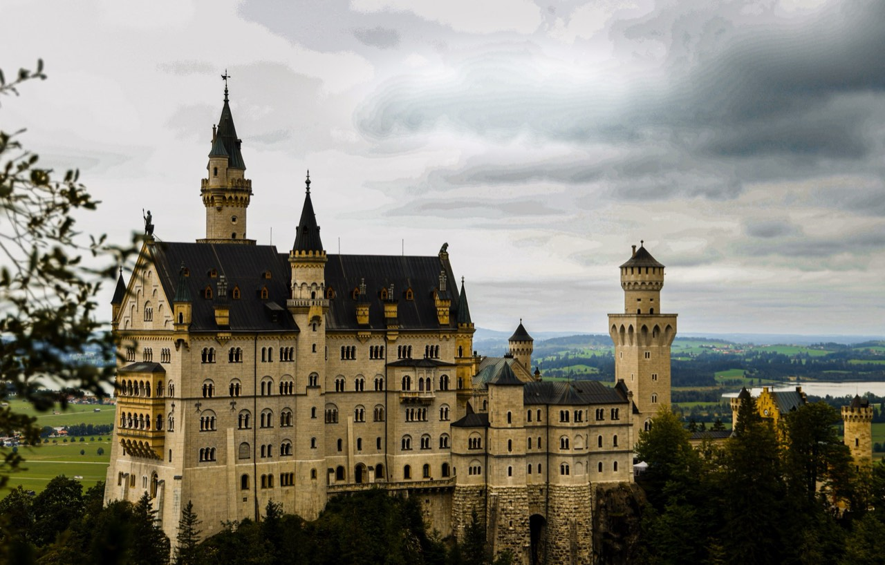
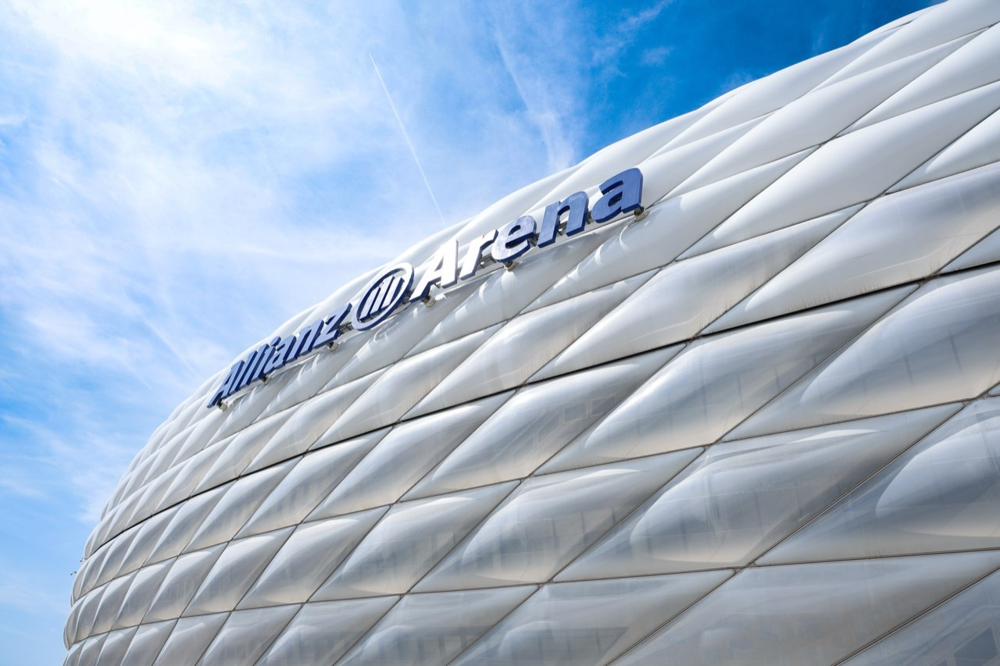

Germany
Summer cities and castle country.
2024 summer
Photographs


The guide for this country is not written yet.
Back to destinationsSummer cities and castle country.
2024 summer


The guide for this country is not written yet.
Back to destinations